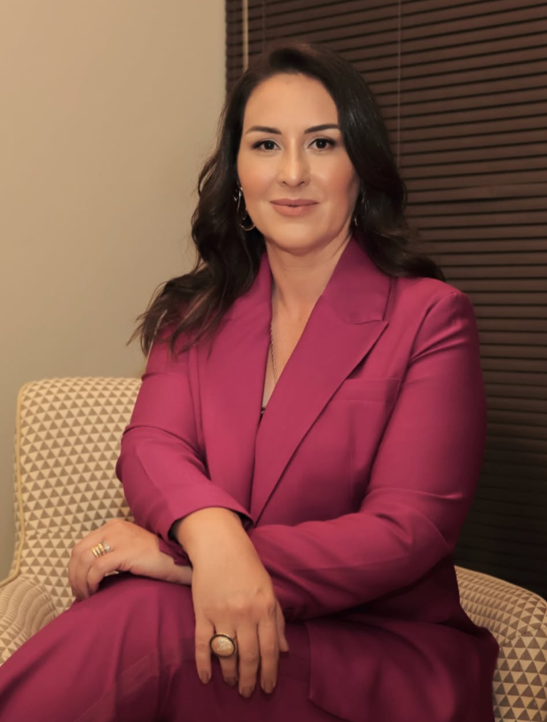
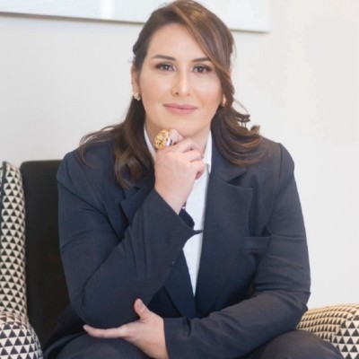

Defesa de profissionais da saúde
Defesa ética e jurídica de médicos e demais profissionais da saúde em questões de responsabilidade civil, penal e ética profissional.
Defesa ética e jurídica para médicos, profissionais e empresas da saúde, com experiência prática nos dois lados do cuidado.
Mestra em Bioética · Advogada desde 2014 · Enfermeira desde 2000

Atuação consultiva e contenciosa para profissionais e organizações que precisam de orientação jurídica especializada.
Defesa ética e jurídica de médicos e demais profissionais da saúde em questões de responsabilidade civil, penal e ética profissional.
Consultoria, assessoria e defesa jurídica para empresas médicas e de saúde, com atenção às rotinas e responsabilidades do setor.
Consultoria para construção, reforma e adequação de estabelecimentos de assistência à saúde conforme a legislação sanitária aplicável.

Antes da advocacia, Layla formou-se em Enfermagem pela Universidade Federal de São Paulo e atuou por dez anos na gestão pública de saúde, incluindo a direção da Vigilância Sanitária Municipal.
É advogada desde 2014, graduada em Direito pela Fundação Educacional do Município de Assis, onde recebeu honra ao mérito como melhor aluna do curso. É mestra em Bioética pela PUC/PR.
Entre em contato para informações sobre atendimento e agendamento.